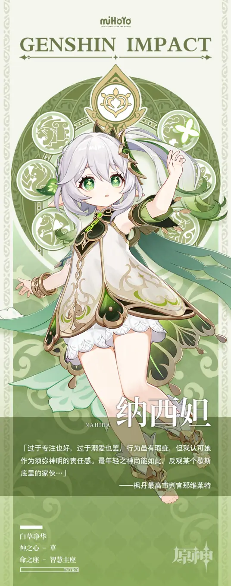

|
纳西妲一直在学习人类的感情，她通过对人类的观察，能知道人类会因哪些行为产生哪些反应，却难以把握对方的情绪。而在学习过后，纳西妲逐渐能理解并站在人类的立场上思考，但她的理解与触动，和人类真实经历的痛苦相比，可能连百分之一都做不到。因此，她不认为这算共情。 在纳西妲的观点中，万事万物都存在着相互联系，一切事物都可以指向“命运”。在她看来，世上可以感受到的一切，可以认知的一切，在人们身上已经发生过的一切，都是知识。是知识，就一定可以被了解。但唯独命运，在人们身上还未发生的事，始终牵动着她的好奇心。所以在她眼中，“命运”才是终极的知识。也正因为如此，纳西妲才那么喜欢观察人类，看着每一件事情在他们的身上发生，都会给她带来满足。虽然一直在观察人们，但她对模仿一直很不擅长。 纳西妲很喜欢使用比喻，她认为比喻是可以用已知知识来理解未知知识的奇妙工具。尽管纳西妲懂得很多大道理，但对常识却不怎么了解。对比起全知全能的大慈树王，纳西妲自认还远远担不起“智慧之神”的名号，对国家的治理也是教令院更加驾轻就熟，她的存在并没有那么大的意义。所以她在净善宫的每一刻都不停在学习，希望尽快成长为一位合格的神明。这份认知直到她即将被贤者们创造的新神取代才被打破。她不该忽视自己的声音，妄自菲薄只会导致贤者们愈发放肆。在做好神明之前，要先做好自己。 |
 |
|---|